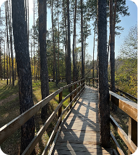
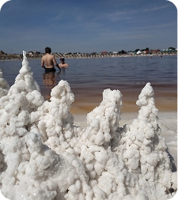
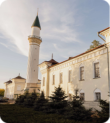
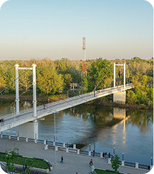
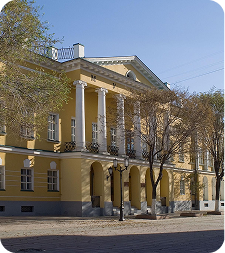

Административная панель
Достопримечательности

Подробнее →Природа
Бузулукский бор
Автор: Марина К.
(128 оценок)
Широта: 52.8500° с. ш.
Долгота: 52.1000° в. д.
Фотографий: 14
Бузулукский район

Подробнее →Природа
Соляные озёра
Автор: Алексей П.
(85 оценок)
Широта: 59.4500° с. ш.
Долгота: 51.2040° в. д.
Фотографий: 8
Соль-Илецкий округ

Подробнее →Памятник
Караван-Сарай
Автор: Андрей К.
(17 оценок)
Широта: 42.2300° с. ш.
Долгота: 49.4000° в. д.
Фотографий: 25
г. Оренбург

Подробнее →История
Пешеходный мост
Автор: Карина Р.
(128 оценок)
Широта: 42.4500° с. ш.
Долгота: 53.3000° в. д.
Фотографий: 18
г. Оренбург

Подробнее →Музей
Краеведческий музей
Автор: Дарья Ф.
(158 оценок)
Широта: 32.8500° с. ш.
Долгота: 12.1000° в. д.
Фотографий: 11
г. Оренбург
Природа
Бузулукский бор
Автор: Марина К.
(128 оценок)
Широта: 52.8500° с. ш.
Долгота: 52.1000° в. д.
Фотографий: 14
Бузулукский район